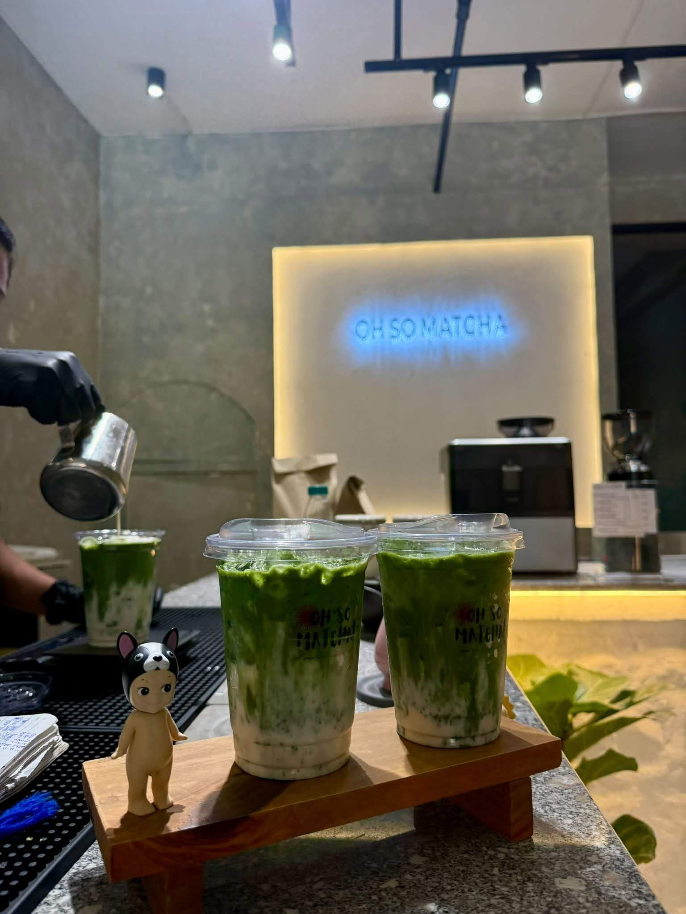
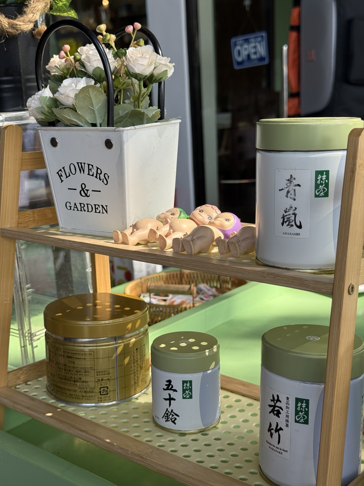

01
THE CREATIVE SIDE
Keithea Rain Alyssandra P. Bas
Helps brainstorm recipes and new ideas, contributes to product development, and helps manage the day-to-day work that keeps the café moving.
Oh So Matcha is a local café in Don Carlos, Bukidnon, serving matcha drinks alongside comforting meals, snacks, and all-day café favorites.

Oh So Matcha Cafe was created from a simple idea: to make quality matcha more accessible and enjoyable for everyone. We wanted to create a welcoming place where customers can enjoy refreshing matcha drinks and treats without needing to travel far.
Business location: Purok 4 Poblacion, Barnido Building, Don Carlos, Bukidnon, Philippines, 8712.
Two roles, one café: the owner leads the business while the creative side helps shape recipes, ideas, and the day-to-day experience.
Helps brainstorm recipes and new ideas, contributes to product development, and helps manage the day-to-day work that keeps the café moving.
The actual owner of Oh So Matcha Cafe, overseeing the business and guiding the direction of the café.
Offer matcha creations with distinct flavors, textures, and levels of intensity.
Maintain a café environment that feels comfortable for everyday visits.
Pair drinks with satisfying breakfast, mains, snacks, and sides.
Be a familiar café stop for the Don Carlos community.
A memorable spot does not need to be complicated: good drinks, dependable food, a pleasant space, and a reason to stay a little longer.
